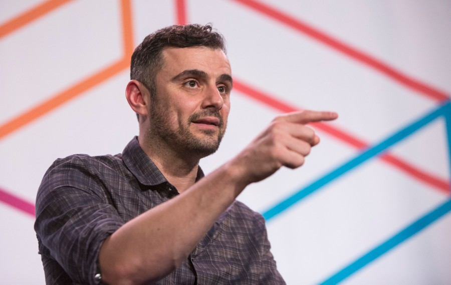

Tribute page about Gary Vaynerchuck (Gary Vee)

Gary Vee giving a speech in a conference. Surely about grind or NFTs :)
Gary Vee giving a speech in a conference. Surely about grind or NFTs :)
Gary Vaynerchuk is the chairman of VaynerX, a modern-day media and communications holding company, and the active CEO of VaynerMedia, a full-service advertising agency servicing Fortune 100 clients across the company's 5 locations. In the late 90s, after identifying “the internet” as a land-grab opportunity, Gary transitioned his father's local liquor store into one of the first wine e-commerce platforms resulting in growing the family business from $3-60MM in sales during a 5-year period.
You can learn more about him in the Wikipedia Wikipedia page about Gary.